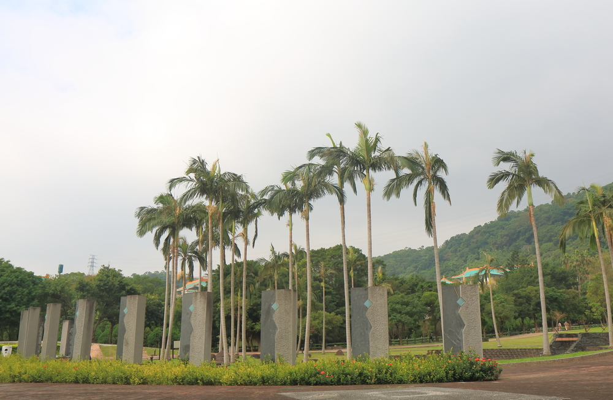
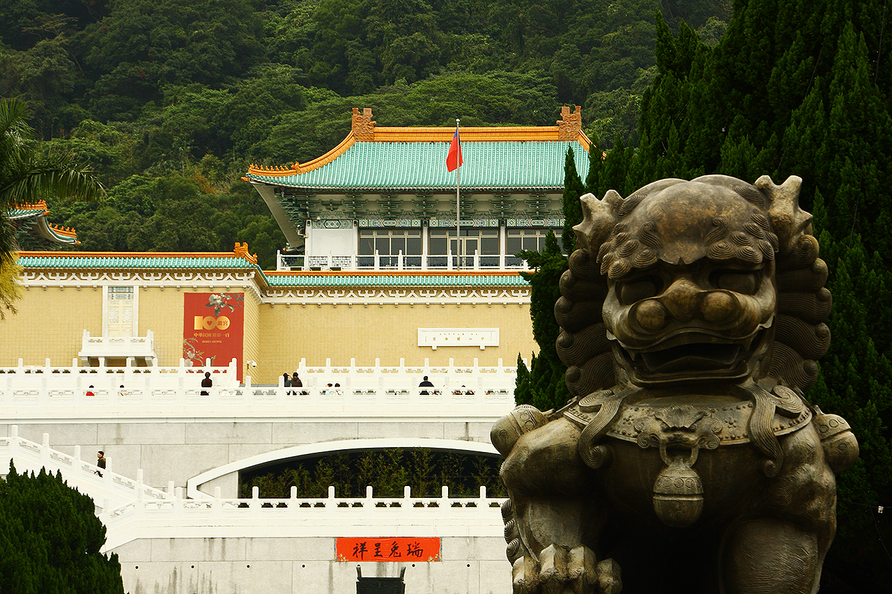
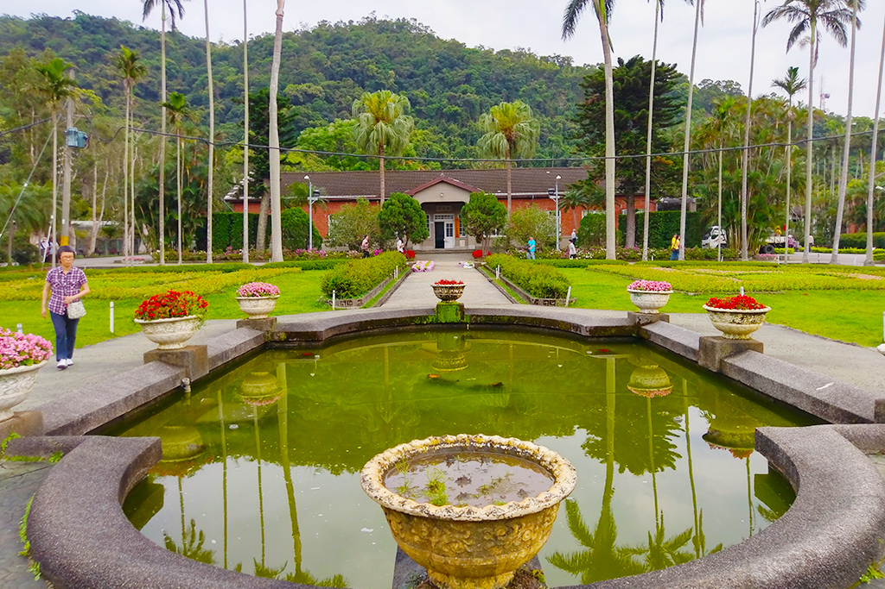
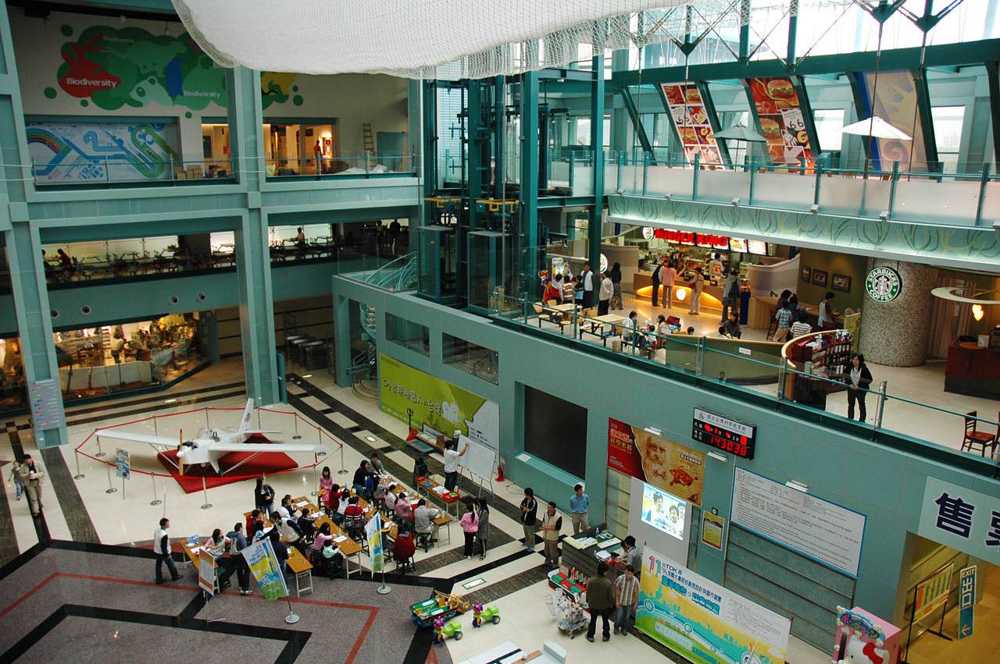
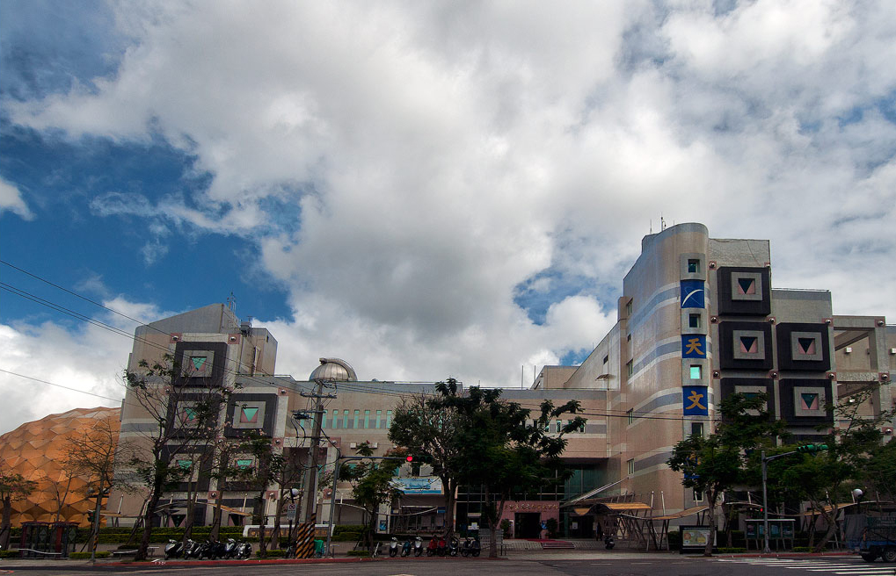

台北都會3日遊
第一天

於熱愛臺灣的本土藝術，不斷投入原住民文物收藏、研究及推廣，希望
為原住民文化貢獻心力，現已累積收藏文物近千件。今後為展示、教育
、研究及保存之需，將繼續蒐藏或複製相關之文物，並進行研究工作。
是目前國內少數由企業資助展現單一特色的博物館。
順益臺灣原住民博物館
西元1944年6月正式開幕，為一人類學博物館，創辦人林清富先生，由於熱愛臺灣的本土藝術，不斷投入原住民文物收藏、研究及推廣，希望
為原住民文化貢獻心力，現已累積收藏文物近千件。今後為展示、教育
、研究及保存之需，將繼續蒐藏或複製相關之文物，並進行研究工作。
是目前國內少數由企業資助展現單一特色的博物館。

，傳承有序的國立故宮博物院典藏，其收藏品的年代幾乎囊括了整個中
華文化五千餘年未曾中斷的歷史，在世界文明史上獨一無二。博物院內
60多萬件收藏品中，大多數是昔日中國皇室的收集品，皇室的收藏則始
自1000多年前的宋朝。隨著數位科技廣泛應用在
國立故宮博物院
故宮收藏的文物珍寶，是舉世聞名的文化資產，從帝王收藏到全民共有，傳承有序的國立故宮博物院典藏，其收藏品的年代幾乎囊括了整個中
華文化五千餘年未曾中斷的歷史，在世界文明史上獨一無二。博物院內
60多萬件收藏品中，大多數是昔日中國皇室的收集品，皇室的收藏則始
自1000多年前的宋朝。隨著數位科技廣泛應用在
士林夜市
士林夜市為臺北市最具規模的夜市之一，以陽明戲院及慈誠宮為中心，包含了文林路、大東路、大南路等熱鬧街市集結而成，其中士林市場早
在民國前二年即已興建，以各種傳統小吃聞名國內外，許多觀光客皆慕
名而來，像是大餅包小餅、石頭火鍋或是士林大香腸等，更是已經成為
美食地標，無人不曉。由於夜市鄰近許多學區，故以學
第二天
芝山文化生態綠園
芝山文化生態綠園位於陽明醫院對面，園區內除了有水生池、百年楓香樹等自然景物外，芝山岩展示館一樓設置了360°的環景模型，述說芝山
岩與周圍臺北城的發展與地緣關係，並有詳細的文獻資料來介紹芝山岩
的人文歷史與自然生態。生態暖房區也培育了許多在地的原生植物，並
讓遊客可以透過水族缸，近距離觀察樹蛙

理所（前身為士林園藝實驗分所）的一部份，在國民政府遷台後，195
0年時，先總統蔣中正先生的官邸便設於此，從此士林官邸便成為臺北
市民眼中神聖神秘且不可親近的禁地。在經過46年的嚴密護衛，民主的
潮流使士林官邸在1996年正式開放，成為遊客們在
士林官邸
士林官邸坐落於士林區中山北路5段與福林路口東南側。原來是園藝管理所（前身為士林園藝實驗分所）的一部份，在國民政府遷台後，195
0年時，先總統蔣中正先生的官邸便設於此，從此士林官邸便成為臺北
市民眼中神聖神秘且不可親近的禁地。在經過46年的嚴密護衛，民主的
潮流使士林官邸在1996年正式開放，成為遊客們在
第三天

鬆發現生活中的科學樂趣。不只要解答每一個「為什麼」的好奇與疑惑
，更開展了科學的無限視野，深入淺出的帶你進入科學的奧妙世界。位
在三、四樓的生命科學、自然科學展示間，可以看到包括人類演化過程
以及遺傳和基因的奧秘。五樓和六樓展示了包括由各種「力
國立臺灣科學教育館
臺灣科學教育館將科學帶出實驗室，並自然地融入日常生活中，讓你輕鬆發現生活中的科學樂趣。不只要解答每一個「為什麼」的好奇與疑惑
，更開展了科學的無限視野，深入淺出的帶你進入科學的奧妙世界。位
在三、四樓的生命科學、自然科學展示間，可以看到包括人類演化過程
以及遺傳和基因的奧秘。五樓和六樓展示了包括由各種「力

堂屋頂上的4吋折射式赤道儀望遠鏡及圓頂觀測台，捐獻給臺北市役所
。光復之後，公會堂為巿政府接收，就更名為中山堂，這就是臺北市立
天文科學教育館的最早前身。之後，人類文化躍入太空時代，社會對天
文知識之需求甚切，因為中山堂附近夜間光害嚴重，不
臺北市立天文科學教育館
1938年，「臺灣日日新報社」為紀念創立40周年，因此將其建在公會堂屋頂上的4吋折射式赤道儀望遠鏡及圓頂觀測台，捐獻給臺北市役所
。光復之後，公會堂為巿政府接收，就更名為中山堂，這就是臺北市立
天文科學教育館的最早前身。之後，人類文化躍入太空時代，社會對天
文知識之需求甚切，因為中山堂附近夜間光害嚴重，不